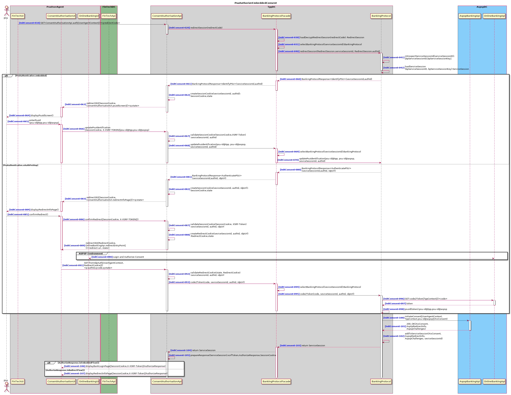

Redirect PSU to consent API
Redirect-010 ConsentAuthorisationApi
The redirect starts with a get request to ConsentAuthorisationApi.auth. The entryPoint of the ConsentAuthorisationApi, for processing a consent initiated on the TppBankingApi side.
Diagram

Request processing ConsentAuthorisationApi
Redirect-021 Retrieve Corresponding BankingProtocol
ConsentAuthorisationApi will use the given redirectCode to load the matching BankingProtocol. This means that the protocol selection information must be encoded in the redirectCode. See Issue #54.
2.2 .. 2.6 Retrieve associated TppConsentSession
ConsentAuthorisationApi will let BankingProtocol use the redirectCode to retrieve the TppConsentSession .
Interacting with the PsuUserAgent
2.7 consentAuthState
The CSRF-State String is called: consentAuthState
2.8 AuthorizeResponse
The AuthorizeResponse returned to the ConsentAuthorisationUI is used to display info to the PSU.
This AuthorizeResponse object is always synchronized with the ConsentAuthSessionCookie set with the same HTTP response object.
Any session, account or payment information needed to manage the authorization process is stored in both AuthorizeResponse (for display) and in the encrypted in the ConsentAuthSessionCookie. The consentCookieString is httpOnly
2.9 ConsentAuthSessionCookie
The ConsentAuthSessionCookie is used to maintain session between ConsentAuthorisationUI and ConsentAuthorisationApi. It will generated and set as a httpOnly, Secure
3. Displaying Consent Authorize UI
4. Redirecting PSU to the ASPSP
The returned AuthorizeResponse object info information needed to redirect the PSU to the target ASPSP. BackRedirectURL (OKUrl, NOKURL, etc... dependent of ASPSP API) contains the consentAuthState.